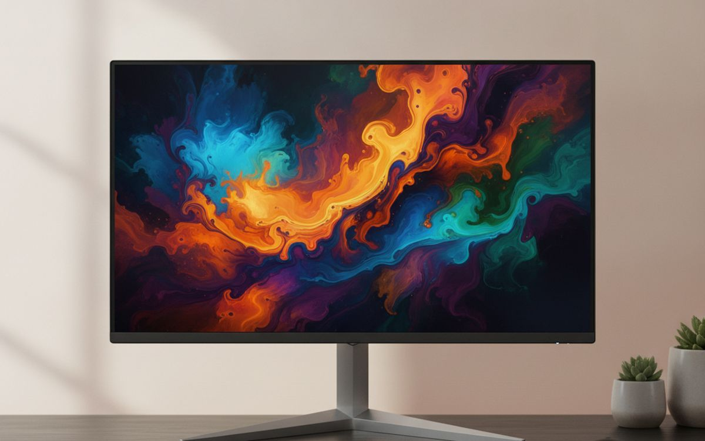
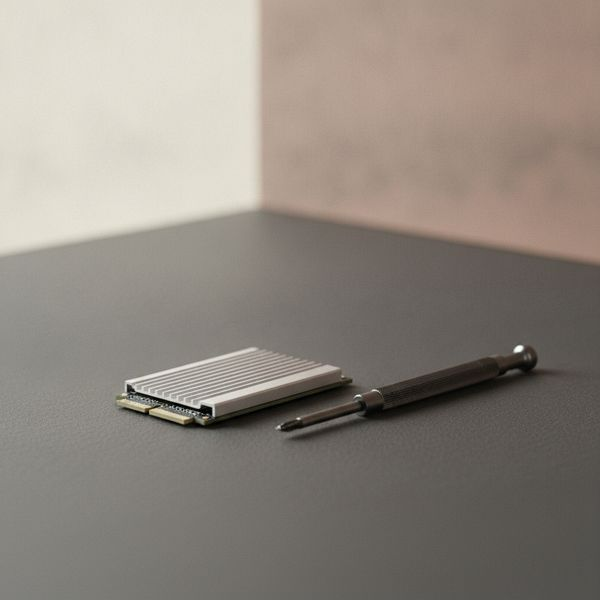
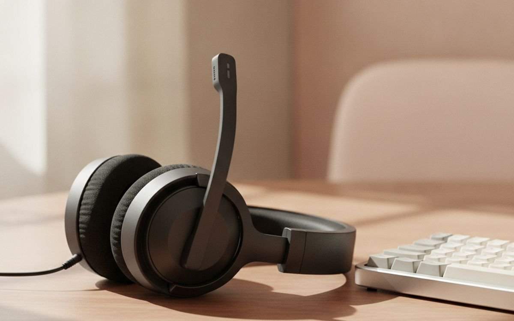
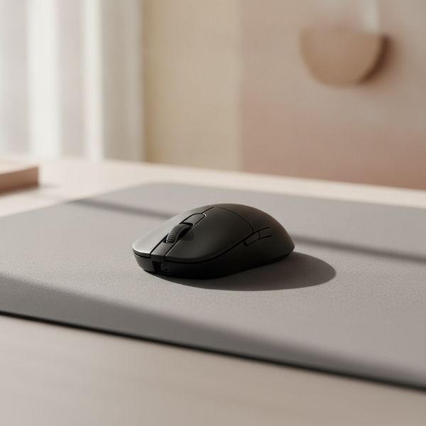
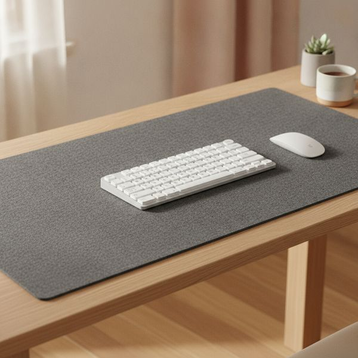
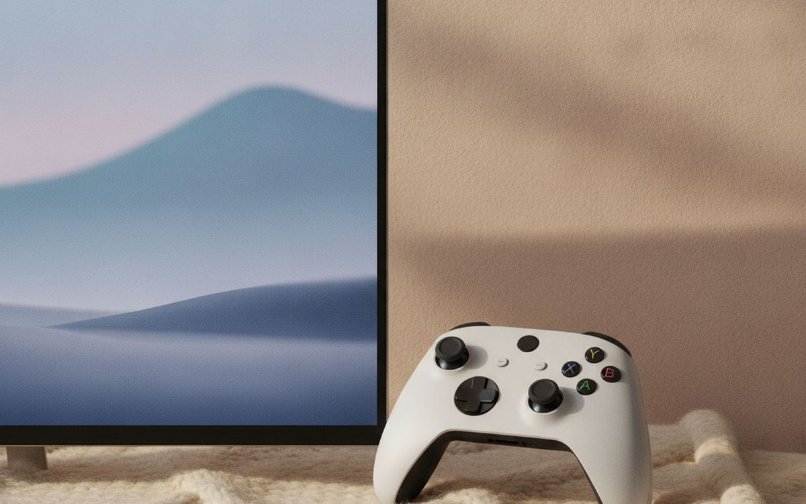
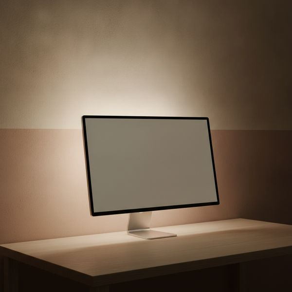
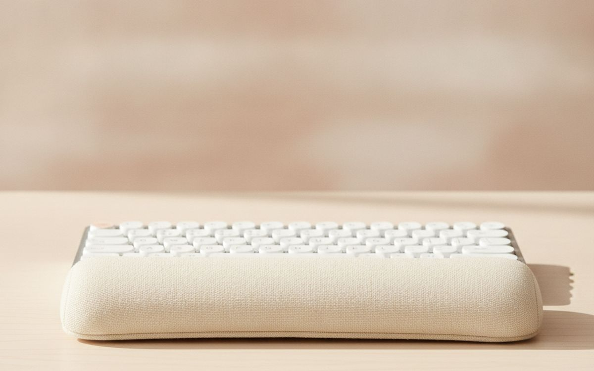
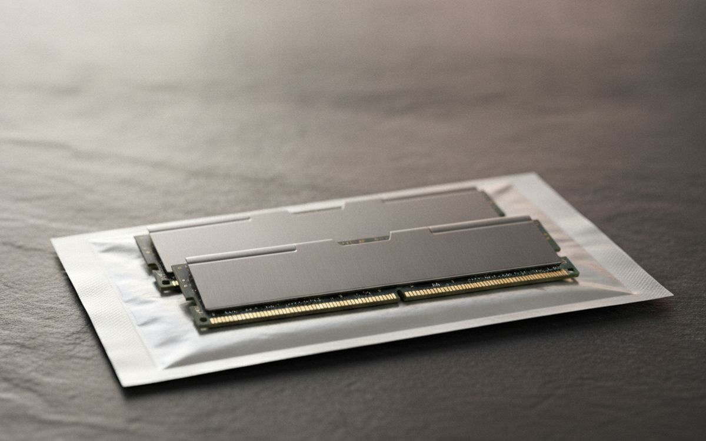
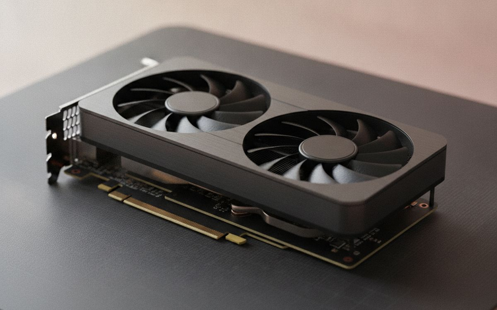

Gaming hardware is sold on numbers that mostly stop mattering above a certain point. The jump from 60Hz to 144Hz is transformative. The jump from 240Hz to 360Hz is something a handful of people can genuinely perceive, and it is priced as though everyone can.
So this list is ordered by perceptible difference per shekel. The top few items change how the game feels within minutes of plugging them in. The bottom few are real upgrades with honest diminishing returns, and we say which is which.
Prices are approximate at the time of writing, and this category discounts heavily around November.
The short version
A 1440p 144Hz monitor
The upgrade you feel immediately
Disclosure. The links on this page are affiliate links. If you buy through one we may earn a commission at no extra cost to you. It does not affect what makes this list or the order it is in.
How we picked
We rank by perceptible difference rather than specification, drawing on published measurement-based reviews, input-latency testing and long-run owner reports. We have not personally tested every item here. Where a spec has stopped mattering for most people, we say so — we would rather talk you out of an upgrade than sell you a number you cannot feel.
At a glance
Prices are approximate at the time of writing and change often.
The picks

01 · The upgrade you feel immediatelyA 1440p 144Hz monitor
If you are still on a 60Hz screen, this is the single biggest perceptual upgrade available in gaming, and it is not close. Everything from mouse movement to camera panning becomes smoother in a way that is obvious in the first thirty seconds and impossible to unsee afterwards. 1440p at 27 inches is the resolution sweet spot: sharper than 1080p without the enormous graphics-card demand of 4K. Make sure adaptive sync is on — it is free, it eliminates tearing, and a startling number of people never enable it. Above 144Hz the returns fall off steeply for anyone not playing competitively.
$220–400Trade-off: Needs a card that can actually push the frames
Why it is here
- The most noticeable upgrade in gaming
- 1440p is the resolution sweet spot
- Adaptive sync eliminates tearing for free
Worth knowing
- Needs a card that can actually push the frames
- Beyond 144Hz returns drop off sharply

02 · Biggest quality-of-life fixAn SSD, if you are still on a hard drive
This does not raise your frame rate at all, and it will still be the change you appreciate most day to day. Load screens go from a minute to a few seconds, open-world texture pop-in largely disappears, and the machine stops feeling reluctant. Modern games are also increasingly built assuming fast storage, so some now stream assets in a way that genuinely stutters on a mechanical drive. A 1TB NVMe drive is the practical size — games are enormous now and a 500GB drive fills up faster than you expect.
$60–150Trade-off: Does nothing for frame rate
Why it is here
- Load times drop from minutes to seconds
- Removes texture pop-in and stutter
- Cheap for how much it changes
Worth knowing
- Does nothing for frame rate
- Check your board supports the drive generation

03 · Positional audio is a real advantageA closed-back headset or headphones with a mic
In competitive games, hearing where a sound came from is genuinely actionable information, and a decent closed-back pair gives you that far better than laptop or monitor speakers. Closed-back matters twice over: it isolates you from the room and stops your speakers leaking into your microphone. Here is the advice that saves money — a pair of good headphones plus a separate clip-on microphone usually beats a same-priced gaming headset, because headset budgets get split between audio and a mic, and the branding tax on gaming-labelled hardware is real. Wired avoids latency and battery entirely.
$70–200Trade-off: Gaming branding carries a price premium
Why it is here
- Positional audio is a genuine competitive edge
- Closed-back stops mic bleed
- Headphones plus separate mic beats a same-price headset
Worth knowing
- Gaming branding carries a price premium
- Warm ears over long sessions

04 · Weight matters more than DPIA lightweight wired mouse
Ignore the DPI number entirely — every modern sensor is more accurate than any human hand, and almost everyone plays at a fraction of the maximum anyway. What you actually feel is weight and shape. Dropping from a 110g mouse to a 60g one changes how quickly you can flick and how tired your wrist is after two hours, immediately and obviously. Shape has to match your grip: palm, claw or fingertip are genuinely different requirements, and a mouse that suits one is uncomfortable for another. Wired is cheaper and lighter; good wireless is now genuinely latency-free but costs more.
$40–90Trade-off: Shape must match your grip style
Why it is here
- Weight is the spec you actually feel
- Wired is lighter and cheaper
- Modern sensors are all accurate enough
Worth knowing
- Shape must match your grip style
- DPI marketing is essentially meaningless

05 · Cheapest real improvementA large cloth desk mat
A consistent, low-friction surface makes aim more repeatable, and if you play at a low sensitivity you need far more room than a small pad gives — running out of mat mid-turn is a real and avoidable problem. A large mat also protects the desk and quiets keyboard noise slightly. Cloth over hard plastic for control and comfort, and stitched edges because that is where cheap mats fray first. It is about twenty dollars and it makes more difference to your aim than the last thirty dollars you would spend on a mouse.
$20–40Trade-off: Cloth needs occasional washing
Why it is here
- More consistent aim than a small hard pad
- Protects the desk and dampens noise
- Very cheap for the difference
Worth knowing
- Cloth needs occasional washing
- Unstitched edges fray quickly

06 · Solves stick drift properlyA controller with hall-effect sticks
Stick drift is the defect that kills most controllers, and it happens because conventional sticks use physical contacts that wear out. Hall-effect sticks read a magnetic field instead, with nothing touching, so they do not develop drift through wear. That single change turns a controller from a consumable you replace every eighteen months into something that lasts. Given that a drifting stick makes a controller genuinely unusable, this is one of the clearest value propositions on the page. Check the model actually says hall effect or TMR, because plenty of controllers at similar prices still use the old design.
$50–120Trade-off: Must verify the model actually uses hall effect
Why it is here
- Does not develop stick drift through wear
- Turns a consumable into a lasting purchase
- Often includes remappable back buttons
Worth knowing
- Must verify the model actually uses hall effect
- Third-party controllers vary in build quality

07 · Cheap comfort, not performanceBias lighting behind the screen
A bright screen in a dark room forces your eyes to keep adjusting between the two, which is a large part of why long night sessions leave you with a headache. A dim light strip behind the monitor raises the surrounding brightness and removes that contrast, and it also makes the picture look better by giving your eyes a neutral reference for black. Use a warm, low, steady light rather than a colour-cycling one, which defeats the purpose. This changes comfort rather than performance, and it costs about the same as a game.
$15–40Trade-off: No effect on performance
Why it is here
- Noticeably less eye strain at night
- Improves perceived contrast
- Costs about the same as one game
Worth knowing
- No effect on performance
- Colour-cycling modes defeat the purpose

08 · Boring, and your wrists will thank youA wrist rest
Mechanical keyboards are tall, and a tall keyboard bends your wrists upward for however many hours you play. Over months that extension is a genuine repetitive strain risk, and it is the kind of problem that is much easier to prevent than to fix. A rest that matches your keyboard's height keeps the wrist closer to neutral. Match the height rather than buying the softest one — a rest that is too low or too high just moves the angle rather than removing it. Memory foam is comfortable and compresses over a year or two; firmer materials last longer.
$15–35Trade-off: Wrong height moves the problem rather than fixing it
Why it is here
- Reduces a real repetitive strain risk
- Cheap and requires no habit change
- Pairs naturally with a mechanical keyboard
Worth knowing
- Wrong height moves the problem rather than fixing it
- Foam compresses over time

09 · Only if you are actually shortMore RAM, to 32GB
This is on the list with a condition attached. If you have 16GB and you play while running a browser with thirty tabs, a chat client and a stream, you are probably hitting the limit and the stutter you blame on your graphics card is actually memory pressure. Going to 32GB fixes that completely. If you have 16GB and close things before playing, more RAM will do essentially nothing and the money belongs elsewhere. Check your actual usage while gaming first — the task manager answers this in ten seconds, and it stops you buying a fix for a problem you do not have.
$60–120Trade-off: Does nothing if you are not actually short
Why it is here
- Removes stutter caused by memory pressure
- Cheap relative to a graphics card
- Helps if you stream or multitask while playing
Worth knowing
- Does nothing if you are not actually short
- Must match your board's memory type

10 · Last, and only after the restA graphics card upgrade
The graphics card is the upgrade everyone reaches for first and it belongs last here, because it is by far the most expensive way to buy a difference and often not the thing holding you back. Before spending, check what is actually limiting you: if your processor is at full load while the card is not, a new card changes nothing. If you play at 1080p on a 60Hz screen, a faster card produces frames your monitor cannot show. Buy the monitor first, confirm the card is the bottleneck, then buy the card — in that order, the money goes much further.
$300–1200Trade-off: By far the most expensive difference you can buy
Why it is here
- The only route to genuinely higher settings
- Holds resale value reasonably well
- Enables higher resolutions properly
Worth knowing
- By far the most expensive difference you can buy
- Pointless if your processor or monitor is the real limit
Common questions
Is a higher refresh rate worth it above 144Hz?
For most people, no. 60 to 144Hz is transformative; 144 to 240Hz is a modest refinement most players cannot reliably identify in a blind test; beyond that it is for competitive players with the reflexes and the frame rates to use it.
Does an expensive gaming mouse make you better?
Weight and shape genuinely affect comfort and consistency, so a mouse that suits your hand helps. The DPI figure does not — every current sensor exceeds what a human hand can exploit.
Wired or wireless for competitive play?
Good wireless is now effectively latency-free and the difference is no longer a real argument. Wired is still cheaper, lighter and never needs charging, which is why plenty of competitive players stay with it.
What should I upgrade first on a tight budget?
An SSD if you are still on a hard drive, then a 144Hz monitor, then a desk mat. That order buys the most noticeable change per shekel, and none of it requires touching the graphics card.
Today's deals
See what is discounted right now.
Deals →← All guides
We are not an Amazon Associate and earn nothing from Amazon links today. As an AliExpress affiliate we earn from qualifying purchases. Prices and availability are accurate as of the date of publication and may change.